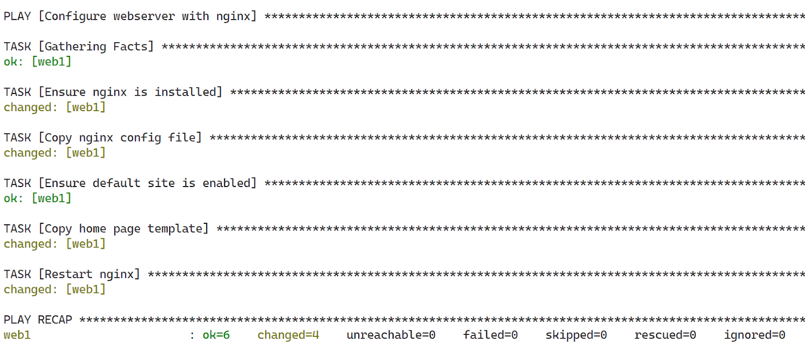
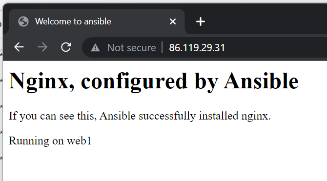
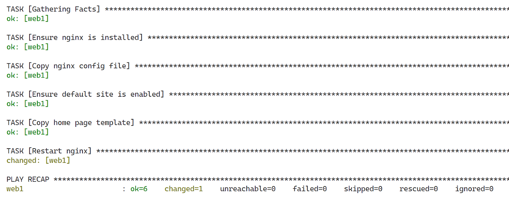
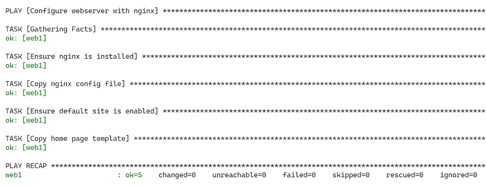

Ansible is a suite of software tools that enables infrastructure as code. It is open-source and the suite includes software provisioning, configuration management, and application deployment functionality.
In this lab we will use it to configure an existing server.
We can install ansible via a Linux package manager or via python.
Install it for your current user on your machine or admin virtual machine. Not on the server to be configured!
pip install --user ansible ansible-lint ansible-navigator
If you use WSL2 you can copy your ssh keys from within the WSL2 Ubuntu shell:
cp -r /mnt/c/Users/<username>/.ssh ~/.ssh chmod 600 ~/.ssh/id_rsa
Create the project structure shown below. The inventory folder will contain all information to locate nodes which we will configure. The templates and files folder will contain files which need to be copied onto the remote nodes.
first_ansible_project
├── first_playbook.yaml
├── inventory
│ └── hosts
├── files
│ └── nginx.conf
└── templates
└── index.html.j2
First we have to tell ansible how to access our remote server.
Inside the inventory directory create a hosts files
[webservers]
web1 ansible_host=w.x.y.z ansible_user=debianHost can be defined in ini format or yaml. Above we have chosen ini format. An entry can be as simple as a domain name to get to the right ip. Or as we have done, be a name associated with an ip and additional options. Here we inform ansible to use debian user as for attempting the connection in case our local username is different. Additionally our web1 is in the webservers group. Host can be referenced in ansible by name, groupname or all.
Test that the connection works by executing the following command
ansible -i inventory all -m ping
This will try to execute module ping on all hosts defined in the inventory.
Create the playbook
- name: Configure webserver with nginx
hosts: web1
become: true
tasks:
- name: Ensure nginx is installed
ansible.builtin.package:
name:
- nginx
state: present
update_cache: trueThis will execute one task with the package module to ensure that nginx is installed on the remote server. become: true (using sudo for commands) at the playbook level will get applied to all tasks.
Run the playbook
ansible-playbook -i inventory first.yaml
Test if nginx is available on the server's public ip.
Prepare two files which will be copied onto the server to have our custom html page.
First we will replace the default nginx configuration with our own.
server {
listen 80 default_server;
listen [::]:80 default_server ipv6only=on;
root /usr/share/nginx/html;
index index.html index.htm;
server_name localhost;
location / {
try_files $uri $uri/ =404;
}
}
We will also create our own index.html file, but we want to adapt it automatically to the servers to which it is copied to. Ansible uses the jinja2 template engine as does Flask. This allows us to inject variables into text files. Here we will use the inventory_hostname as defined in our hosts file.
<html>
<head>
<title>Welcome to ansible</title>
</head>
<body>
<h1>Nginx, configured by Ansible</h1>
<p>If you can see this, Ansible successfully installed nginx.</p>
<p>Running on {{ inventory_hostname }}</p>
</body>
</html>
Adapt the play book to copy these files and restart nginx.
- name: Configure webserver with nginx
hosts: web1
become: true
tasks:
- name: Ensure nginx is installed
ansible.builtin.package:
name:
- nginx
state: present
update_cache: true
- name: Copy nginx config file
ansible.builtin.copy:
src: nginx.conf
dest: /etc/nginx/sites-available/default
owner: www-data
group: www-data
mode: 0644
- name: Ensure default site is enabled
ansible.builtin.file:
src: /etc/nginx/sites-available/default
dest: /etc/nginx/sites-enabled/default
state: link
- name: Copy home page template
ansible.builtin.template:
src: index.html.j2
dest: /usr/share/nginx/html/index.html
- name: Restart nginx
ansible.builtin.service:
name: nginx
state: restarted


You will see that only restart is executed again, all the other task are not applied as they already are in the correct state. This is Ansible's Idempotency in action (An operation is idempotent if the result of performing it once is exactly the same as the result of performing it repeatedly without any intervening actions).

By adding the restart task to a new handlers section instead of tasks and using the notify attribute whenever we required the restart to be triggered if a change occurred. We can make the restart depend on the execution of another task.
- name: Configure webserver with nginx
hosts: web1
become: true
tasks:
...
- name: Ensure default site is enabled
ansible.builtin.file:
src: /etc/nginx/sites-available/default
dest: /etc/nginx/sites-enabled/default
state: link
notify: Restart nginx
- name: Copy home page template
ansible.builtin.template:
src: index.html.j2
dest: /usr/share/nginx/html/index.html
handlers:
- name: Restart nginx
ansible.builtin.service:
name: nginx
state: restarted
Run to test if nginx restarted is trigger or not

We previously deployed a production ready guestbook app with SSL by hand. This time we will create an ansible playbook which does everything for us.
The app is 03_nginx_gunicorn_certbot, which we will clone from github and then run in a python virtual environment via gunicorn. Static files are served by nginx the other request are proxied to gunicorn.
We will configure nginx to serve files and proxy the rest. As the domain name might change we will use a template with a variable (service_host) instead of hardcoding it into the file. The project folder (project_dir) is also a variable.
upstream backend {
server 127.0.0.1:8000;
}
server {
listen 80;
server_name {{ service_host }};
root /usr/share/nginx/html;
index index.html;
location / {
proxy_pass http://backend;
}
location /static {
alias {{ project_dir }}/03_nginx_gunicorn_certbot/static;
}
}
We define the service template file with project directory
[Unit]
Description=gunicorn instance to serve Flask app
After=network.target
[Service]
User=www-data
Group=www-data
WorkingDirectory={{ project_dir }}/03_nginx_gunicorn_certbot/
Environment="PATH={{ project_dir }}/03_nginx_gunicorn_certbot/env/bin"
ExecStart={{ project_dir }}/03_nginx_gunicorn_certbot/env/bin/gunicorn --workers 1 --threads 8 --bind 127.0.0.1:8000 app:app
[Install]
WantedBy=multi-user.target
In this playbook we will define and use our own variables. Adapt them to your project!
We also prompt for the duckdns token to ensure that it is not saved in a file.
- name: Configure guestbook app
hosts: web1
become: true
vars:
project_dir: /usr/share/guestbook
service_host: "gb-heg.duckdns.org"
service_admin_email: "boris.fritscher@he-arc.ch"
vars_prompt:
- name: duckdns_token
prompt: Enter duckdns token
private: true
tasks:
- name: Ensure dependencies are installed
ansible.builtin.package:
name:
- nginx
- git
- python3
- python3-pip
- python3-venv
- certbot
- python3-certbot-nginx
state: present
update_cache: true
- name: Clone project from github
ansible.builtin.git:
repo: 'https://github.com/bfritscher/guestbook-src.git'
depth: 1
single_branch: true
dest: "{{ project_dir }}"
- name: Change ownership
ansible.builtin.file:
path: "{{ project_dir }}"
owner: "www-data"
group: "www-data"
state: directory
recurse: true
- name: Copy nginx config file
ansible.builtin.template:
src: templates/http.conf.j2
dest: /etc/nginx/sites-available/default
owner: www-data
group: www-data
mode: 0644
- name: Ensure default site is enabled
ansible.builtin.file:
src: /etc/nginx/sites-available/default
dest: /etc/nginx/sites-enabled/default
state: link
notify: Restart nginx
- name: Update DuckDNS via api
ansible.builtin.uri:
url: "https://www.duckdns.org/update?domains={{ service_host }}&token={{ duckdns_token }}&ip={{ hostvars['web1']['ansible_host'] }}"
return_content: true
register: this
failed_when: "'OK' not in this.content"
- name: Generate certificate
ansible.builtin.shell: certbot --nginx -d {{ service_host }} --noninteractive -m {{service_admin_email}} --agree-tos --redirect
- name: Install specified python requirements in indicated (virtualenv)
ansible.builtin.pip:
requirements: "{{ project_dir }}/03_nginx_gunicorn_certbot/requirements.txt"
virtualenv: "{{ project_dir }}/03_nginx_gunicorn_certbot/env"
virtualenv_command: /usr/bin/python3 -m venv
- name: Add service
ansible.builtin.template:
src: templates/gunicorn-gb.service.j2
dest: /etc/systemd/system/gunicorn-gb.service
- name: Register service
ansible.builtin.systemd:
name: gunicorn-gb
enabled: true
daemon_reload: true
state: restarted
handlers:
- name: Restart nginx
ansible.builtin.service:
name: nginx
state: restarted
To know what parameters and tasks are available it is necessary to search in the Ansible Documentation!
However here some details about some of the above tasks.
As we are only interested in the latest version of our files on the main branch. By specifying depth and single branch the clone will be much faster. These are git options exposed by the module.
On the update duckdns url task we use hostvars['web1']['ansible_host'] to get the hosts external ip from the hosts facts database. To get all available variables you can check for a specific host with:
ansible-inventory -i inventory --host web1
On the update duckdns url task we used a return in order to evaluate the result of the request to determine if the task should be marked as successful or not. Any task can return or register a result, which then can be displayed by a debug task.
In the current configuration the shell task which runs certbot will always run. A better version would check if certbot needs to be run to be compatible with the Ansible's Idempotency concept. This can be achieved with conditionals.
Ansible often has generic and specific modules. Generic modules are preferred if possible because they work on multiple linux distribution for example for packages:
Or for services:
In our case we needed to be able to specify daemon_reload to be sure that changes are detected and integrated by systemd.
ansible-playbook -i inventory guestbook.yaml
You should be able to go to your duckdns domain with https and see the guestbook running!